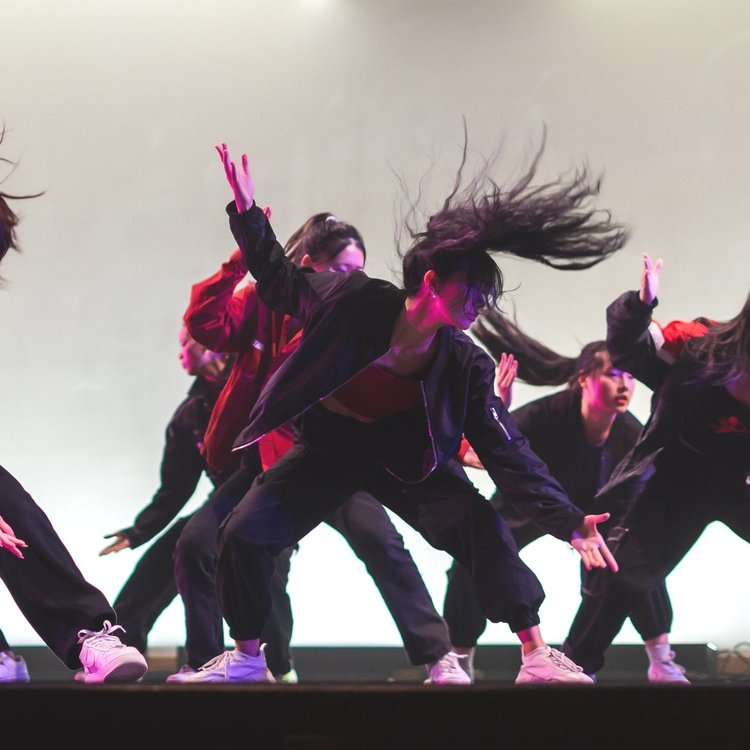
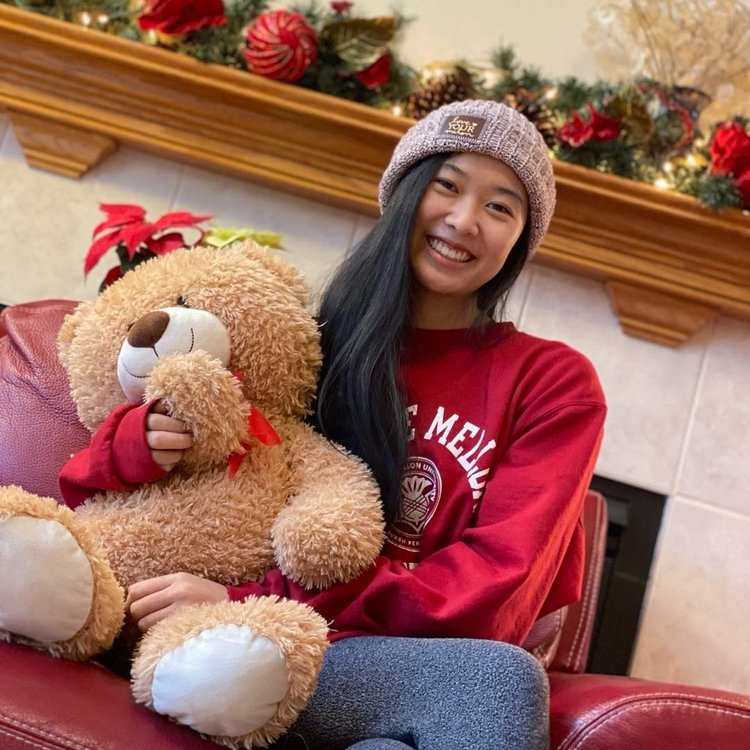
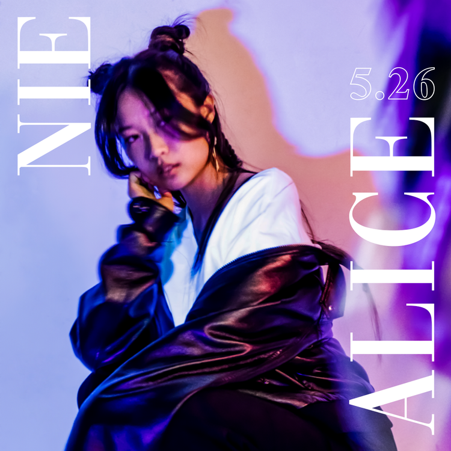
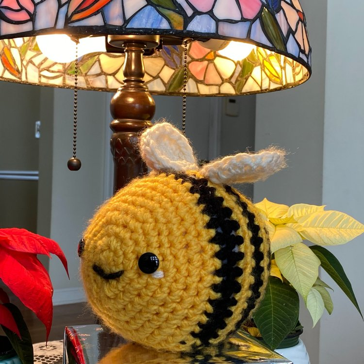
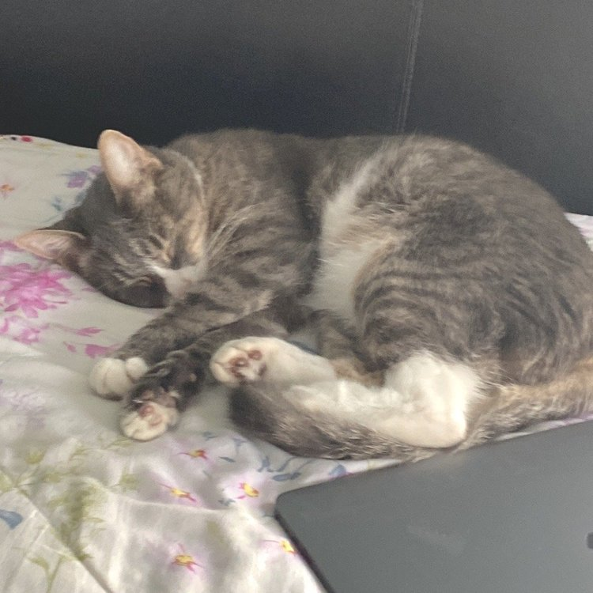
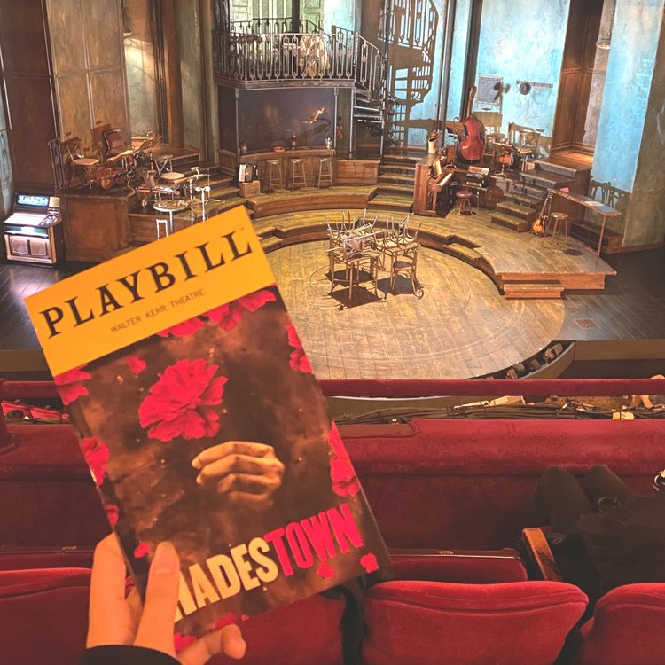

I’m a junior at Carnegie Mellon University double majoring in Human-Computer Interaction and Information Systems, with a minor in Business Administration.
My interest in design stems from a passion to make technological tools more accessible. I strive to empathize with users in order to create products that are both sustainable and intuitive.
Thanks for stopping by! Feel free to contact me, I welcome any opportunities to grow as a designer.
<3 / MORE ABOUT ME
Artistic Director
My favorite holiday!
May 26, 2002
My pandemic hobby
Say hi to Raine!
My favorite musical
